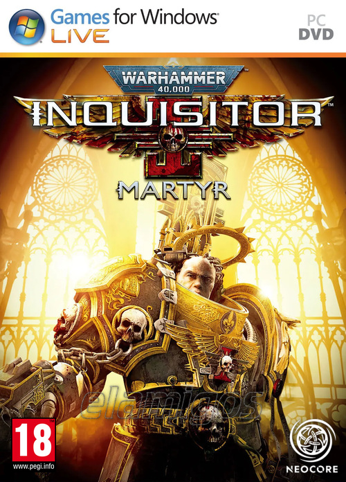

Warhammer 40000 Inquisitor Martyr Definitive Edition 19.3 GB
Género: RPG de Acción
Entra en el Sector Caligari infestado de Caos y purga a los impuros con los
agentes más poderosos del Imperio del Hombre. Warhammer 40,000 Inquisidor
Martyr es un sombrío RPG de acción que presenta múltiples clases de la
Inquisición que llevarán a cabo la voluntad del Emperador.